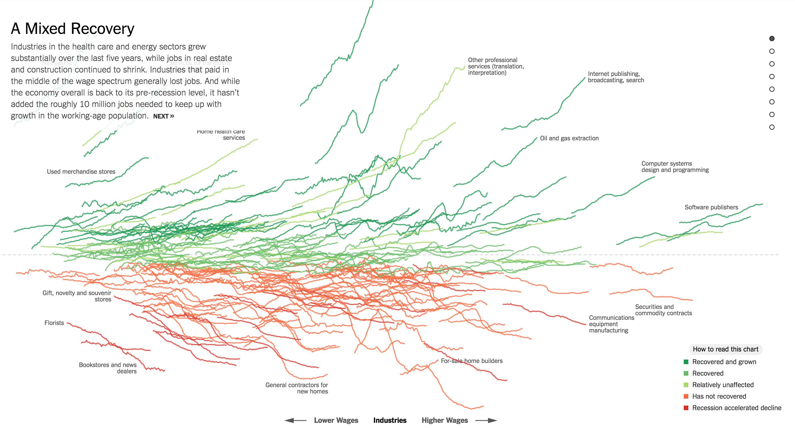

Fernando is currently a graduate student at MIT's Master of City Planning program.
Updated Sunday, February 12th, 2017.
One of my favorite visualization projects is "How the Recession Reshaped the Economy" produced by the New York Times in 2014.
